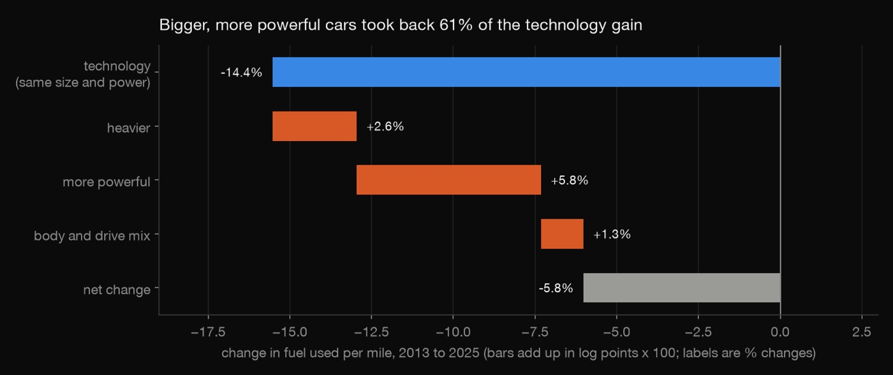
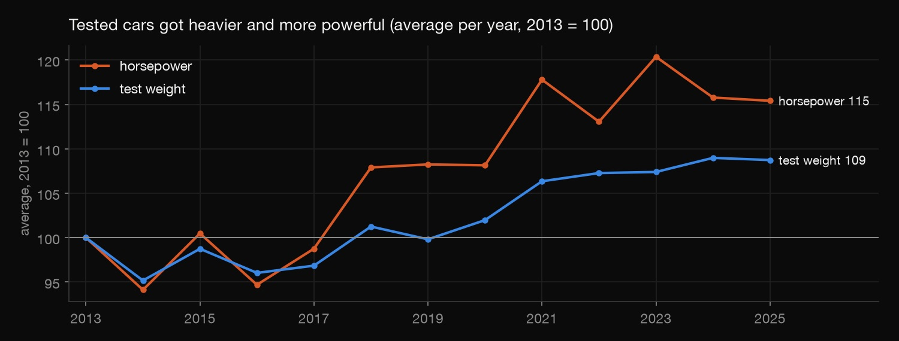
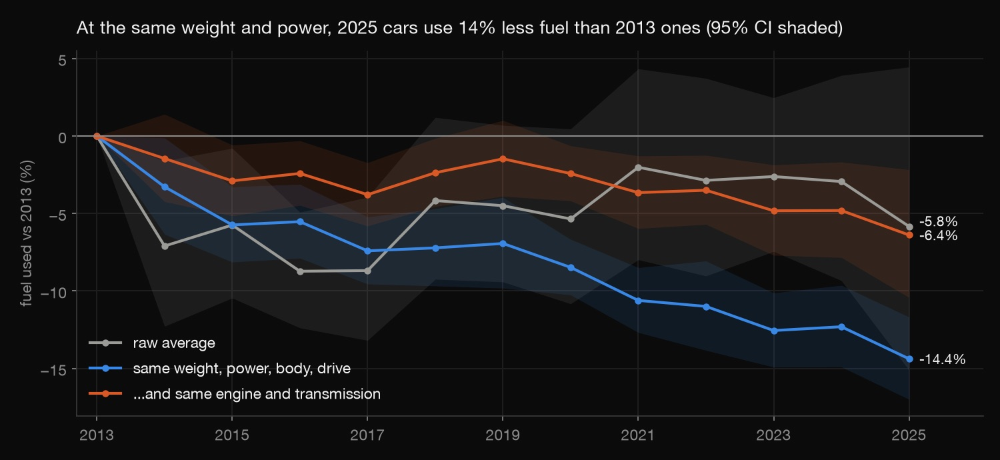
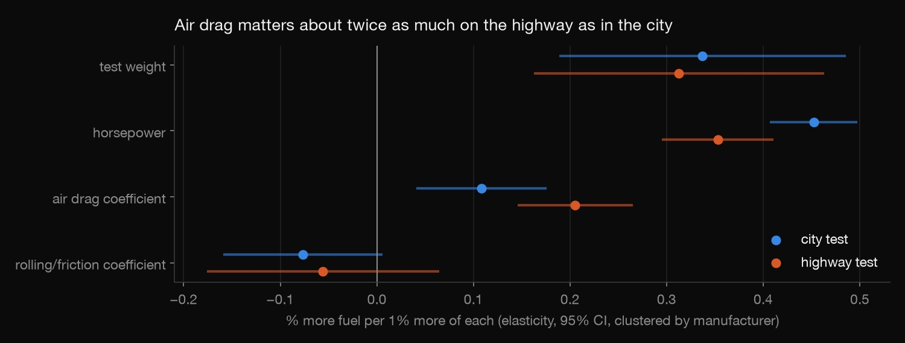

Python · Regression · 2026-10
Where Did the Fuel-Economy Gains Go?
A regression on 6,341 EPA test vehicles, 2013 to 2025: engine technology cut fuel use 14% at the same size and power, and heavier, more powerful cars took 61% of it back.

These are the vehicles EPA tests, not a sales-weighted fleet, and lab test values rather than window-sticker MPG. The year effects are associations: everything that changed at the same weight, power, body and drive.
01 — The problem
Car makers have spent a decade on better engines and transmissions, yet fuel use per mile has fallen far less than that progress suggests. Regulators setting fuel-economy rules, and anyone forecasting fuel demand, need to know why. How much less fuel does a car of the same weight and power use than ten years ago, and how much of that gain went into making cars heavier and more powerful?
02 — What I built
A log-log regression on EPA's own test-car data, model years 2013–2025:
- A cleaning funnel that finds three traps: carried-over tests, unflagged hybrids and placeholder horsepower.
- A model of what buyers choose (weight, power, body, drive) with model-year effects, so each year effect is technology at the same size.
- An exact decomposition of the 2013→2025 change into technology, weight, power and mix.
- Honest uncertainty: manufacturer-clustered errors and cross-validation that holds out whole car models.
- A physics check of city vs highway driving, and
check.py, which refits everything independently.
03 — How it was built
- 01
Get EPA's test data
EPA publishes every fuel-economy test it relies on: the test vehicle's weight, rated horsepower, engine, transmission and the measured result.
download.pyfetches the 15 model-year files from 2012 to 2026, 66,976 test results in all.out.write_bytes(urllib.request.urlopen(req, context=ctx, timeout=120).read()) - 02
Find the traps before modelling
Three problems would have biased the answer:
- Carry-overs: a model that isn't redesigned keeps last year's test, listed again, and 99.9% of repeated test numbers have identical results. Counted every year, old technology would look current, so each test counts once, in its first year.
- Hidden hybrids: there's no hybrid flag. Conventional cars use about a third less fuel on the highway than in the city, but hybrids don't, so a city/highway fuel ratio under 1.2 flags them. Names and plug-in tests catch the rest. The largest residuals turned up a few more, such as the Volvo XC90 T8 and the McLaren P1.
- Placeholder horsepower: three Audis are listed at 999 hp.
CO₂ × MPG stays at about 8,875 g per gallon every year, so the test fuel never changed. The 2026 file is a partial early release (265 vehicles, a different mix), so the comparison ends at 2025.
Step Left All test results 66,976 Certification gasoline 54,496 City or highway test 46,404 Measured, not derived 41,409 Not police vehicles 41,207 Each test once 18,247 First tested 2013–2025 14,907 Vehicles with both tests 6,937 Not hybrids 6,426 Usable values 6,341 Up to "First tested" the counts are tests; from there on they are vehicles.
t = a[keep].sort_values("year").drop_duplicates("Test Number") # a carried-over test counts once, in its first year - 03
Model what buyers choose, not the technology
The outcome is gallons per 100 miles, combining EPA's two tests as 0.55 × city + 0.45 × highway, rather than an average of MPG. It is logged, so coefficients are elasticities. The controls are only what a buyer chooses: weight, horsepower, car or truck, and drive. Engine size, gears and transmission type are left out on purpose, because they are the technology. Controlling for them would hide the progress being measured. A model-year dummy then captures what changed at the same size. The model explains 82% of the variation.

ATTRS = "log_weight + log_hp + C(vtype, Treatment('Car')) + C(drive, Treatment('front'))" - 04
Get the uncertainty right
One maker's cars share engines, so 6,341 vehicles are not 6,341 independent facts. Clustering the errors by the 31 manufacturer groups widens them 3.5–4.2×. Cross-validation holds out whole car models, so a car's near-twin is never in the training set. Here that barely changes the score, because the model is simple.
Robust Clustered Std. error, weight 0.016 0.056 Std. error, power 0.007 0.031 Random Grouped Held-out R² 0.820 0.815 Median error 6.5% 6.6% 31 clusters is near the usual minimum of about 30, so the intervals are approximate.
fit = lambda fml, d=f, g=clusters: smf.ols(fml, d).fit(cov_type="cluster", cov_kwds={"groups": g}) - 05
Split the change into its parts
With year dummies in an OLS model, residuals average to zero within each year. So the change in average log fuel use from 2013 to 2025 splits exactly: each attribute's change times its coefficient, plus the year effect.
check.pyrecomputes this from the data and confirms the parts add up. On raw averages, the 2025 gain (−5.8%) isn't even statistically clear. At the same weight and power, it is −14.4% (95% CI −17% to −12%).
Adding engine and transmission to the model shrinks the gain to −6.4%. So measured changes (more gears, smaller turbocharged engines, CVTs) explain 57% of it.
parts["technology (year effect)"] = float(m.params[f"C(year, Treatment('{FIRST}'))[T.{LAST}]"]) - 06
Check the physics
A separate model adds EPA's road-load coefficients. Air drag's effect on fuel use is about twice as large on the highway (0.21) as in the city (0.11), as physics predicts, since drag grows with the square of speed. Weight matters about equally on both tests. The largest VIF is 3.0.

04 — Results
| 2013 → 2025 | Change |
|---|---|
| Technology, same size | −14.4% |
| Heavier | +2.6% |
| More powerful | +5.8% |
| Body and drive mix | +1.3% |
| Net | −5.8% |
Average test weight rose from 4,212 to 4,581 lb and horsepower from 286 to 330. Trucks went from 23% to 44% of tested vehicles. Bigger, more powerful vehicles took back 61% of the technology gain.
| Holding the rest fixed | Fuel used |
|---|---|
| 10% heavier | +3.0% |
| 10% more horsepower | +3.7% |
| Truck vs car | +7.5% |
| All/4-wheel vs front | +2.6% (n.s.) |
| Rear vs front | +3.1% (n.s.) |
The same model under different choices (n.s. = not statistically significant):
| Version | Weight | Power | 2025 |
|---|---|---|---|
| Main | 0.31 | 0.38 | −14.4% |
| Hybrids kept | 0.30 | 0.39 | −13.7% |
| City only | 0.32 | 0.41 | −15.7% |
| Highway only | 0.28 | 0.32 | −11.9% |
| Once per model | 0.32 | 0.40 | −15.9% |
The lesson: decide which variables are the outcome of interest before choosing controls. Controlling for engine size and gears would have erased most of the technology this project set out to measure.
05 — What I'd do next
- Weight by sales using EPA's Automotive Trends data, to describe the fleet people actually bought.
- Separate 48-volt mild hybrids and turbocharging once a reliable flag is available.
- Extend back to the 1990s files to compare with the earlier "cars on steroids" period.